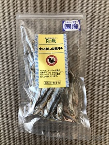
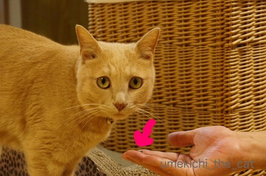
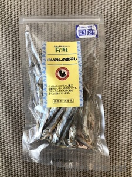
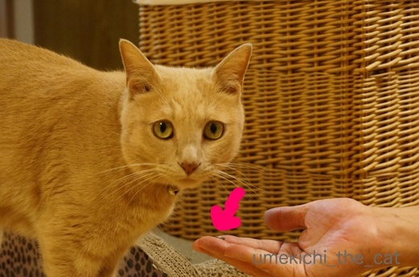

記念日ディナーは２日遅れで☆ [梅吉]
先日26日のうちの子記念日。
梅吉に喜んでもらおうと煮干しを買ってきました。
ペットショップに行って国産、無添加、無着色という
グラム換算すると結構なお値段の煮干しをゲット！
梅吉には「夜に良いことあるよ」って耳打ちしておきました＾＾
うれしい煮干し祭りの予感〜♪


初めて食べる煮干し、食いつきは良い様です(≧▽≦)

お口に入れてぶるるるるるんっ！

あ、口から出しましたΣ(ﾟ◇ﾟ；)

そのお顔は何を意味してますか・・・
「コレジャナイ」の顔に見えるのはなぜかしら。

そんなのは気のせい、気のせいに違いない。
さっきあげたのは頭部分だったから今ひとつだったのよね？
気を取り直して今度は胴体部分いきましょう！

![[猫]](https://blog.ss-blog.jp/_images_e/101.gif) せやから 「これじゃない」 いうてるやん
せやから 「これじゃない」 いうてるやん
えええええーーーーー！！！！！
梅吉、煮干しを食べません（涙）
口には入れるのですが出す、入れる出すの繰り返し。
どうにも止まらない煮干し祭りを想像していたのに・・・・・
(꒦ິ⌑꒦ີ)
２日後☆
おとーさんとおかーさんは「高島屋」まで行って高級お刺身を買ってきましたよ。


お口が大きく開いてます！

これやっ！まぐろ、うまい！！

こんどは かつおやな！

これやー！！

やっと しゅやくのわしに ええことあったー！！！
ちなみに梅吉はまぐろよりかつお派ですw

やっとええことあったで おかーさんうそつきや おもうとこやった
梅吉が食べない煮干しはプライパンで乾煎りしてちょっとお醤油を垂らして
お酒のアテにしようと思ってますwww
猫様のお下がりをいただく、ああ、下僕・・・・・
 ↑ガブッと一押し↑
↑ガブッと一押し↑
お正月の神事に来阪していた白雪さん、覚えていらっしゃるでしょうか。
例祭のために10日ほど前から大阪に来ています。
暑い中お疲れ様です！

ご挨拶に行きましたがやっぱりお尻しか拝ませていただけませんでした。
厩舎の中は扇風機が何台も設置されていましたがエアコンはなし。
北海道からやって来た白雪さんなので暑さに体を慣らしている模様。
お祭り期間、あまり暑くないと良いなぁと思っていたのですが
神事のある日の予想気温は35℃。照りつける太陽・・・
白雪さん、がんばれ！！
梅吉に喜んでもらおうと煮干しを買ってきました。
ペットショップに行って国産、無添加、無着色という
グラム換算すると結構なお値段の煮干しをゲット！
梅吉には「夜に良いことあるよ」って耳打ちしておきました＾＾
うれしい煮干し祭りの予感〜♪



初めて食べる煮干し、食いつきは良い様です(≧▽≦)

お口に入れてぶるるるるるんっ！

あ、口から出しましたΣ(ﾟ◇ﾟ；)

そのお顔は何を意味してますか・・・
「コレジャナイ」の顔に見えるのはなぜかしら。

そんなのは気のせい、気のせいに違いない。
さっきあげたのは頭部分だったから今ひとつだったのよね？
気を取り直して今度は胴体部分いきましょう！

えええええーーーーー！！！！！
梅吉、煮干しを食べません（涙）
口には入れるのですが出す、入れる出すの繰り返し。
どうにも止まらない煮干し祭りを想像していたのに・・・・・
(꒦ິ⌑꒦ີ)
２日後☆
おとーさんとおかーさんは「高島屋」まで行って高級お刺身を買ってきましたよ。


お口が大きく開いてます！


ちなみに梅吉はまぐろよりかつお派ですw

梅吉が食べない煮干しはプライパンで乾煎りしてちょっとお醤油を垂らして
お酒のアテにしようと思ってますwww
猫様のお下がりをいただく、ああ、下僕・・・・・
お正月の神事に来阪していた白雪さん、覚えていらっしゃるでしょうか。
例祭のために10日ほど前から大阪に来ています。
暑い中お疲れ様です！

ご挨拶に行きましたがやっぱりお尻しか拝ませていただけませんでした。
厩舎の中は扇風機が何台も設置されていましたがエアコンはなし。
北海道からやって来た白雪さんなので暑さに体を慣らしている模様。
お祭り期間、あまり暑くないと良いなぁと思っていたのですが
神事のある日の予想気温は35℃。照りつける太陽・・・
白雪さん、がんばれ！！

カフェオレ色の梅吉

梅吉 2023年8月10日 永眠


梅吉と出会った譲渡会

犬猫の理由なき殺処分ゼロ
妄想広告
UMEKICHI 光

爆発的に早い！
時々攻撃的！
Thanks to Mr.Boss365
爆発的に早い！
時々攻撃的！
Thanks to Mr.Boss365

お刺身おめでとにゃあ♪─o(´･∀･`)o─
メインディッシュまで粘る姿はステき♪
改めまして、記念日おめでとです♪
これからもずーっと一緒に、お幸せにね＾＾＠
by 猫毬 (2018-07-30 00:28)
記念日の煮干し祭り！！
と思ったら・・・拍子抜けですね(;^_^A
梅吉さん・・煮干しはお気に召しませんでしたか！
我が子のおやつって高いですよね（笑
産地や素材、添加物など気になり
無添加なものなどヒューマングレードを
気にしちゃいます！
高級刺身！通な梅吉さんですね！
美味しいものが食べられて
良かったですね(#^.^#)
by きぃ (2018-07-30 06:27)
うちの子達もいわしは嫌いますね。
にぼしは食べさせたことが無くてどうなるか楽しみな部分もありますが、
いわしの切り身が入った缶詰は食べてくれませんでした。
結局ワンちゃんのご飯に＾＾；
by ぽちの輔 (2018-07-30 06:36)
煮干しといえば、家で飼っていた猫はを思い出します。
煮干しを飲み水のトレイに入れて、出汁を取った水を飲むんでたんですよ。
最初は偶然かと思ったのですが、何度も続くとそうは思えなくなりました(笑)
by kou (2018-07-30 07:16)
梅吉さん、煮干しはお口に合わないのですね。
by ニコニコファイト (2018-07-30 07:20)
煮干を柔らかくするとどうでしょう
by スイカが好き (2018-07-30 08:12)
がっついているところより、コレジャナイ感の表情の方が、
メチャ可愛く見えるんですが(〃'∇'〃) コレジャナイ感の
表情をもっと拝見したいと言ったら梅吉様に悪いか^_^;
白馬、大福みたいで、バックショットもいいかも(^_^;)
by middrinn (2018-07-30 08:42)
煮干しは、間違いなく人間が酒のツマミになりますね(笑)
いまどきの猫のおやつ、素材も良いから人間が食べても美味しいです。
わたしは猫用のソフトタイプのかつおぶしをツマミに食べますよ。噛めば噛むほど、良い味がでてくるんだわ、これが(笑)
先代猫のゆずくんは煮干し好きだったけど、アタマは残す子でしたｗ
by リュカ (2018-07-30 09:56)
おはようございます。
煮干しあげた時の梅吉君の表情！！良いですね！！
「ちゃうねん！！だから、ちゃうねん！！」みたいです！！
最後の梅吉君の顔を推測すると・・・
「プレゼント待ってるねん！？カツオ派！！よろしくねん？」みたいです！！
大阪弁？あってますか？難しい！！
梅吉君の喜ぶ顔が、下僕冥利？に尽きます！？(=^･ｪ･^=)
by Boss365 (2018-07-30 10:51)
猫は子猫の頃からあげているものじゃないとピンとこないようですね。全く知らない匂いだと食べ物とすら認識してくれないこともあります。高級おやつに慣れているグルメ梅吉さんを満足させるのは大変そう。余り物ありましたらうちでいくらでもいただきますよ~。
by zombiekong (2018-07-30 12:57)
記念日ディナーにとせっかく選んだ煮干しなのに・・・
お口に入れたと思ったら出しましたか。
梅吉くんもちぃさんも、思い描いていたのと違う～の空気がｗ
梅吉くんのしょんぼり顔ったら。
家の子だったら、とどめに砂掛けの真似もしそうですｗ非情でしょ( ；∀；)
高級お刺身には、もう食いつきが違う～！！
うそつきやと思われなくてよかった！！高島屋へ走った甲斐がありましたっ！！
白雪さん、覚えています。
暑いので心配ですね。頑張ってほしいです(*^-^*)
by emi (2018-07-30 13:47)
梅吉さんは煮干は苦手みたいですね！
お刺身好きは贅沢ですね(^ ^)
by ma2ma2 (2018-07-30 17:50)
梅吉さん、現代っ子ですね（笑）
お口が超えていらしゃる。
煮干し祭りの後に、
大御所（まぐろとかつお）が控えていると察知してましたね（笑）
まぐろにかつおですって、私もちぃさん家のニャンのなりたい（笑）
下僕道まっしぐらのちぃさん家、のどかで良いです。
by kiki (2018-07-30 18:31)
ひや～梅吉さんったらグルメなんだから(*^▽^*)
高島屋のお刺身ってこれまたスーパーよりかなりの格上だ！！
ウチのは子猫の頃からキャットフードしかあげていないので、ヒトの食べ物にはあまり興味を示しません。
うどん出汁に一度手を突っ込もうとしたぐらいで^^;
満を持して提供したちゅーるにも見向きもしませんでしたし、もっとイロイロ食べさせてあげればよかったとちょっと後悔です。
はい、我が家もこてつのおさがりのタオルを使ってます。下僕ですから♪
by ゆきち (2018-07-30 19:34)
煮干しよりマグロとカツオ!!もう梅吉君たら贅沢なんだから～(*^_^*)
夏の水分補給に煮干しだしはいかが？でも手間かけて飲まなかったら凹むのでやっぱり人間のおつまみで(^_^)/
by palpal (2018-07-30 19:39)
うんうん。猫は小さい時に食べたことあるもの以外は食いつき悪いですね。
zombiekingさんが同じこと書いてますね。
うちの吉なんて、お刺身すら食べ物という認識はなく、食べてくれません。
ちょっと寂しい、、、。
いやしいくらい食い時がはってる方が、可愛いんですけどね。
by nachic (2018-07-30 21:07)
ウチのネコも煮干は食べませんが、
梅吉さんも一緒だったのですね。^^;
ウチのヤツは刺身は食べないくせに
一回チンするなどして火に通すとガツガツたべます。^^;;
by yes_hama (2018-07-30 21:55)
子供の頃の話をします。
田舎で私が小さい頃飼っていた猫のゴハンは御飯に削りガツオを掛けたものでした。毎日それでした。
たまに削りガツオの代わりに煮干しになる事もありました。
それを思い出しました。
それだけです(^^;
by riverwalk (2018-07-30 22:28)
そうそう、皆様も書かれていますが、
煮干しって、大人猫になってからだと食べない・・・。
ウチにいた子も、煮干しには「？」って顔をしていました。
なんだろ、苦いのかな？
by angie17 (2018-07-30 23:42)
これじゃない・・・おいたわしやにぼしさん（＆ちぃさん^^;）
ああでも、ヒトが消費できるもので良かったです（笑）
カツオのお刺身が好きなのですね。
戻りとか上りの時期はたまんないんだろうなぁ？
by Ja-Kou66 (2018-07-31 01:08)
そうなんやー。
みんながみんな、煮干し好きではないのですね？！
そしてカツオの刺身。なんてゴージャス(≧∀≦)
by よーちゃん (2018-07-31 06:59)
あぁ、梅吉さんも煮干しお好きじゃなかったんですね(*_*)
うちもニャンズの喜ぶ顔が見たくてお高い塩分なしの
煮干しを買ってきたことがありますが、砂かけされて終了でした( T_T)
喜ぶと思ってたのに「コレジャナイ」って顔されると凹みますよねぇ(ｰ ｰ;)
梅吉さん、「コレや♪( ´▽｀)」の刺身祭り開催してもらえて
おめでとうございます=(^.^)=
そうそう、うちもお猫様に砂かけされた煮干しは
私たちが美味しくいただきましたw
by ニッキー (2018-07-31 08:00)
あ”あぁぁぁーーー。
煮干し、ダメでしたかぁーーーー（悲）
記念日ということでの、テンション増し×2の、お初アイテム。
なのに、これじゃないんじゃ！、だったのね（泣）
オサシミ、イケたのに。。。。
ということは、渇きモンが、イケナカッタのかしら？
ウむむ。手ごわし。。。(^_^;)
我が家の黒いオトコも、小難しくって、
サバは食べるけど、アジやイワシは食べない。
女子の方は、それこそ何でも食べるのにねぇ。
白雪さん。おつかれさまです！（覚えてますともっ！！）
早く、北海道に帰れるといいですね。
って、彼の地も暑いのかぁ(T_T)
by morichan (2018-07-31 12:17)
ニャハ！王子様だもん、これでいいのだ～♪ にゃんこなんだもん、猫っ可愛がりでいいのだ～♪ ☆⌒ヽ(*'､＾*)chu
by Ginger (2018-07-31 13:46)
かつお派の梅吉くん、記念日おめでとうっ♪
by yuppie (2018-07-31 13:47)
わぁ！
高級煮干し、お好きではなかったの？？？
梅吉ちゃんたら～。
っで、二日後の
さしみぃーーーー？？？？？？
そりゃ、凄いわ^/^
ちぃさん、私、いまのニャンズに煮干しもお刺身も考えたことがありませんでした。そういえば、大昔一緒に暮らしてたニャンにあげてたなーと思い出しまして。いや、でもペット用の煮干しがあるなんて＠＠びっくりですｗ
煮干しの匂いとかつおの香り、違いがちゃんとわかるのね、梅吉ちゃん。
なぜ、まぐろよりかつおなんだろう？(笑)
by ake_i (2018-07-31 15:57)
高級煮干し、美味しそう！
梅吉さん食べたことがなかったのですか？ 子供の頃に覚えた味でないとだめな場合もありますね～。
うちのはみんな好きだったけど、子供の頃から食べてるし‥
みゅんは途中からは食べちゃいけなくなったので、そういう大人猫も多いから、制限しなくていいとある意味楽かも。
白雪さん、素敵～この酷暑のなか、ご苦労さまです。
by sana (2018-07-31 20:34)
猫鞠さん＞
かつおは時々食べてたんだけど
まぐろは実は初めてでした＾＾
うちは(にんげん）二人とも好んで食べないのでw
梅吉に喜んでもらえて良かったですー！
来年は何を用意しようかな＾＾
食べ慣れてて好きなものの方が良さそうですね♪
きぃさん＞
我が子のおやつは足元見られているなって思いますwww
うちはおやつとして売っているものよりも
人間の食べているもので味のついてないものを
たまに与える様にしています。
あとはフードのみ！
健康でいてもらう為にはいろいろ気を使いますよね＾＾
ぽちの輔さん＞
いわし、お刺身なら食べるのですよ・・・
焼いたのは（人間があまり食べないから）
どんな反応をするか未知数ですけど。
これから残った煮干しで出汁を取ってみようと思ってます。
さて、どんな反応になるやら( ´艸｀)
ワンちゃん、イワシ食べるんだ！DHA摂取で健康的かも(^_－)☆
kouさん＞
それは！！間違いなく出汁を取ってますね！
頭いいなぁ＾＾
いただいたコメント見て梅吉のおさがりの煮干しで出汁を取ろうと決意w
梅吉が飲んでくれたら水分補給にOK。
ダメだったら人間のお味噌汁用かな( ´艸｀)
ニコニコファイトさん＞
うーん、どうも子供の時に口にしてないものは
受け付けない様ですwww
スイカが好きさん＞
梅吉のお下がり煮干しで出汁を取ろうと思っているので
煮込む前の柔らかくなったのを与えてみようと思ってます！
食べるかなぁ・・・もし食べたらにゃんこのくせに
柔らかいものが好き！？
middrinnさん＞
コレジャナイ感たっぷりの顔は
梅吉の困り目の魅力がたっぷり詰まった表情ですからＯ(≧▽≦)Ｏ
梅吉は毎日２〜３度は「ご飯の時間はまだでしょ！」といわれて
この表情してますよ＾＾
見せて差し上げたいですwww
ああ、お餅は神の依り代ですから！大福もあり！？
リュカさん＞
あら＾＾
お下がりどころか積極的にニャンコのおやつを摂取していらっしゃる。
人間用にもあのかつぶしを柔らかく固めたキューブ状のつまみがあるけど
結構しょっぱいから・・・
猫用なら塩分も少なそうで健康的かも！
ソフトタイプなら顎の危険なリュカさんにもぴったりだね＾＾
言われてみれば頭、苦いよねw
いりこ出汁取るときも頭取るもんね。
頭からあげたのが間違いだったかしらー！！
Boss365さん＞
そうそう！大阪弁難しいんです。
梅吉はネイティブなんですが翻訳する私がエセ関西人なので
時々間違ってるかもしれませーんwww
煮干しで痛恨のミスをしてしまったので
美味しいお刺身＆喜んで食べてもらってホッとしたのでした＾＾
下僕、大満足です！！
zombiekongさん＞
そうかー！煮干しは梅吉には未知の物でしたか・・・
でもとりあえず口に入れちゃうのがさすが梅吉ですwww
実は生のいわしは食べるのですよ。
乾きものというのがダメだったのかしら(^_^;)
zombiekongさんちはオヤツの消費量も凄そうです！
もし何かあったら・・・覚えておきますね＾＾
emiさん＞
飼い主と梅吉の間で高まる期待！
ああ、それなのに・・・(꒦ິ⌑꒦ີ)って感じでした。がっかり。。。
砂かけするのね！無かったことにしたいのかな？？
それもツライねーw
知人のうちの子はコーヒーが嫌いで
飼い主が飲んでるコーヒーカップに砂かけ行為するんだって。
「飲む気失せるわ！」って言ってました(*>艸<)
白雪さんの出番当日の予想気温が37℃に！
人混みがすごすぎるので私は見に行きませんが
家から白雪さんの無事を祈ってます。
ma2ma2さん＞
お肉もお魚もやっぱり「生」が好きみたいです！
ハンターですからー！！がるるるるっ。
kikiさん＞
にゃんこはみんな煮干しが好きだと思っていましたよ。
私はまだ現代人になり切れていないのかもーwww
どうやらにゃんこも小さい時の味覚が食べる食べないに繋がる様ですね。
が、梅吉実はこのときがまぐろ初体験！
我が家は二人ともまぐろを好んで食べないので（トロは好きw）
与えたことがなかったんですが・・・
シーチキンを食べていると「わーわー」鳴いていたので
美味しそうな匂いで覚えていたのかな＾＾
kikiさんが我が家のにゃんこに！？
無理やりチューされますよwwwお覚悟を ( ´艸｀)
ゆきちさん＞
はい＾＾自分たち用には滅多にお買い物などすることのない
天下の高島屋のデパ地下に行って来ました！！
ウニとかありえないくらい高くてびっくらしましたよwww
ちゅ〜るは、確かに猫様大喜びですが添加物とか塩分とか
すごいので食べなければそれで良しかなって思ってます。
（うちも一度しかあげたことありません。喜びましたけど・・・）
うどん出汁に手をINは無いですが（爆笑）うっかりすると
マヨネーズの残りとか舐めてることが (＠◇＠)
子供の時食べてなくても美味しいものはちゃんとわかる疑惑もあるですwww
palpalさん＞
半分はお酒のアテ用に炒ってちらっと醤油で味付け
残りの半分で出汁を取ってみたよ！
出汁は冷めたら梅吉に飲ませてみようと思っています。
飲まなかったら・・・下僕のお味噌汁になるかなw
どっちにしてもお下がりだわ。あははははは（乾いた笑）
nachicさん＞
うちは人間用にも昔から煮干しは常備してないからなぁ・・・
食べなれた味でちょっと目先の変わったものとかが
猫様のご馳走でしょうかw
食い意地が張ってるほうがかわいい？
じゃあ梅吉は可愛過ぎですよー(*>艸<)
食卓テーブルなんてガード役の人が座ってくれないと
お料理並べられません(-_-メ)
yesa_hamaさん＞
おお、アズ氏はなまものだめなんですね！
梅吉はどちらかと言うとなまもの派です＾＾
煮干って意外と人気ないんですね・・・
猫様、乾き物がお好みではないのかしら( ´艸｀)
riverwalkさん＞
夏休みにおばあちゃんの家に行くと
牛舎（酪農やってたの）を警備していたにゃんこさん達は
ごはん＋お味噌汁＋出がらしを食べてましたよ＾＾
一昔前はどこもそんな感じでしたよねー。
動物性タンパク質は自分でネズミを捕って補給。
あとはしぼりたての牛乳もらってました。
（今は牛乳は猫には良くないって言われてますけど）
angie17さん＞
梅吉はなまのいわしは食べるんですよー。
干すとイマイチの味に感じるのでしょうか。
梅吉が食べなかった煮干し、早速食べてみましたが
確かに頭は苦かったけどそれ以外は
噛み締めると味が出てなかなか美味しかったです＾＾
干物に凝縮された旨味成分を感じ取れるのは
人間ならではなのでしょうね＾＾
Ja-Kou66さん＞
どうみても「コレジャナイ」顔ですよねー(*>艸<)
がっくり半分可笑しさ半分でしたw
かつおもね、たたきが好きなんです。
あの香ばしく焼き目のついたところなんて大好きですよ！
脂の少ない上がりがお好みかな＾＾
よーちゃん＞
どうやら子供の時の食生活が左右する様ですよ。
煮干しは今まで与えたことなかったからなぁ・・・
カツオは、たたきが好きな梅吉でーす。
私もなので味覚が似るのかしらw
ニッキーさん＞
そうそう！
愛猫に喜んでもらおうと自分たちが食べる時には
買わない値段の物買っちゃいますよねー(⌒_⌒;
砂かけされちゃったようですがニッキーさんたちは
美味しい煮干しでカルシウム補給、でしたね＾＾
我が家もそのままで、出汁を取って美味しくいただきますよ(๑˃̵ᴗ˂̵)و
morichanさん＞
満を持しての煮干しだったのに見事に玉砕しちゃいましたw
いわしも生だったら食べるのですよー。
干すと口に合わない旨味成分が凝縮されちゃうんでしょうか・・・
DHA摂取にもなるし良いと思ったんだけどなーwww
ポポくんもなかなか好みが難しいのですね。
だったらいつも同じものをあげ続けよう、
とは思わないところが下僕なんですよねぇ。。。
初めてのものを美味しそうに食べる姿、見たいですもんね(^_－)☆
北海道も30℃越えの日が多いみたいですね。
でも！夜には20℃ぐらいになるから・・・
私も白雪さんのトラックに乗って一緒に北海道に避暑に行きたいっ。
Gingerさん＞
なんたって我が家のヒエラルキーの頂点でいらっしゃいますからね、
梅吉さんは＾＾
煮干し事件（笑）にも懲りず次は何にトライしようか
考えを巡らせている下僕です！
yuppieさん＞
次はかつおの猫缶とかにしてみようかなぁヾ(*ΦωΦ)ﾉ
お祝いのコメントありがとうございました＾＾
ake_iさん＞
ちゃんとペット用に塩分を控えた煮干しがあるんですよー＾＾
もしかしたら塩分が少ないのが食べない原因だったかな？
なんてちょっと思ってます。
（でも雄猫は膀胱関係の病気が多いから塩分多めのものはあげません）
ake_iさんちのゴージャスな外見のニャンコさん達に
煮干しとは意外な取り合わせっぽいですがもしかしたら喜んでくれるかも！？
青い目の人が納豆食べてるようなイメージですwww
まぐろは、実はこの日が初めてでした。
シーチキンの匂いで「わーわー」騒いでたので
食べてみたいものの匂い、と記憶していたのかしら。
かつおは幼いころから食べているので安定の美味しさみたいな感じでしょうか＾＾
あとは！梅吉、鱧が好きなんですよ！
さすが関西猫でしょう？( ´艸｀)
sanaさん＞
煮干し、そのままたべても美味しかったですよ＾＾
さっき、から炒りしてごま油とお醤油を少しだけ垂らしてみたのですが
これがまたおいしくて〜。煮干し、私が癖になりそうですw
大人になってから煮干しを食べなくなっちゃう？
猫も味覚が変わるのかな？？
食べなきゃいけないものじゃないのでOKですけどね！
白雪さん栄養状態も良くおちりがぴちぴちのむちむちでした ( ´艸｀)
撫でたりしてみたいんですが尊い神馬なので
俗人が手を触れるのはご法度なのですwww
by ちぃ (2018-08-01 15:09)
うちの子記念日、おめでとうございます♡＾＾
煮干し、最初は良い感触のご様子だったのに、
ぺっ！しちゃうとは…＾＾；
あかりも、これ美味しいでしょ？高かったんだよ～って
ものでも、ぷいっとすること多いです＾＾；
なんでかな～。
でもやっぱり、梅吉さんには、瑞々しいお刺身とかが
似合ってるしね(^_-)-☆
by マーヤ (2018-08-01 19:51)